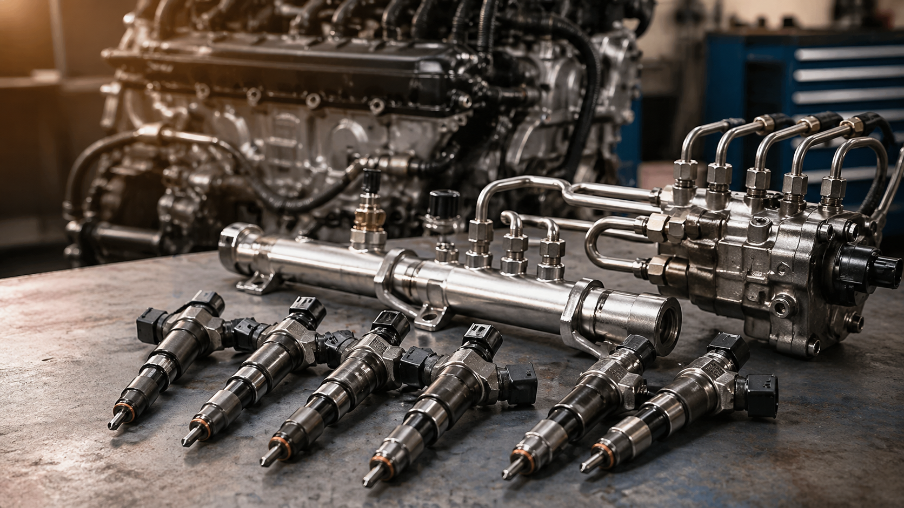
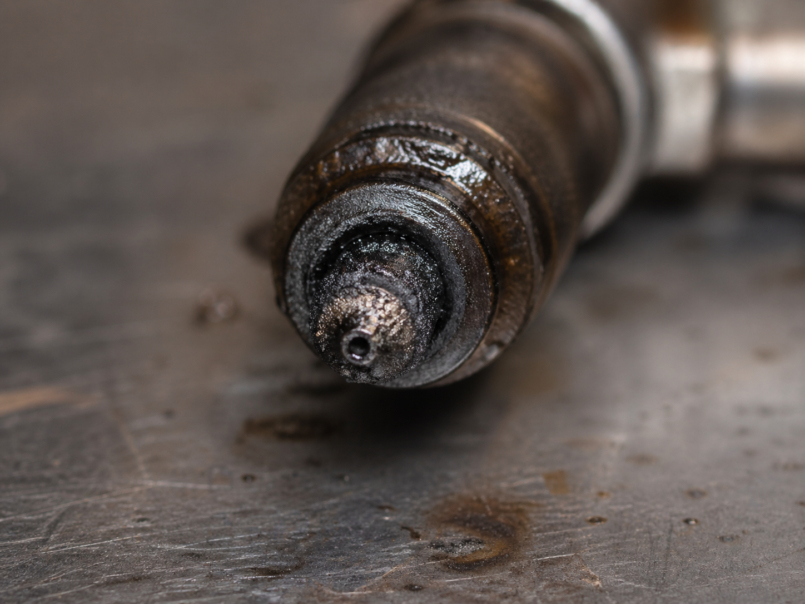
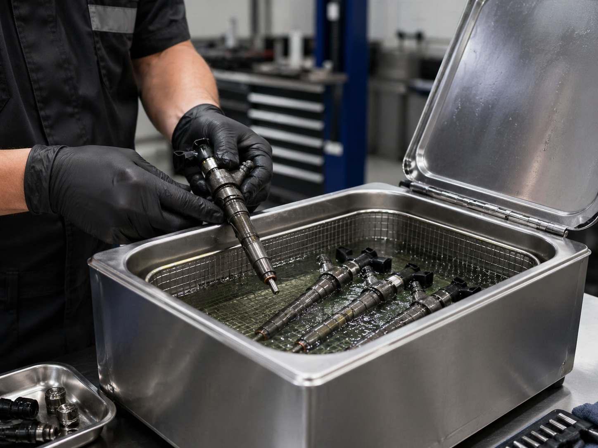
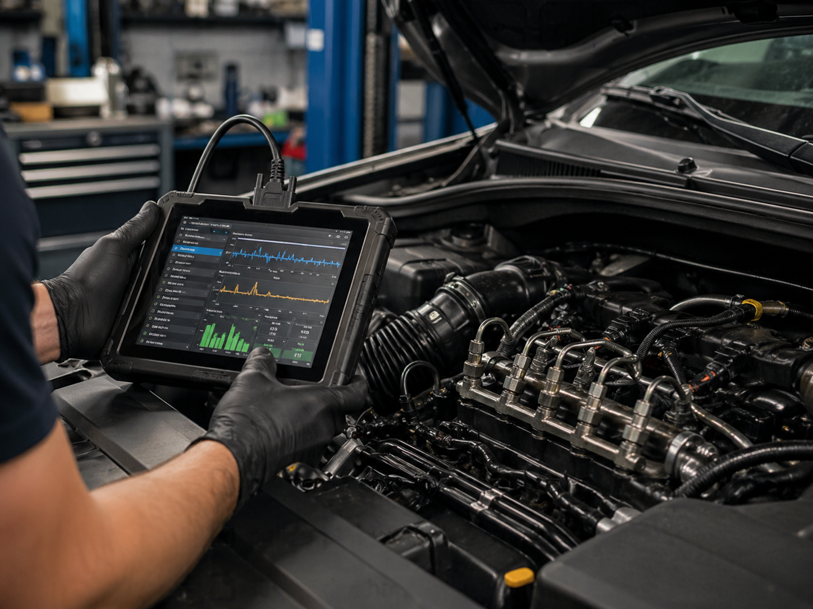
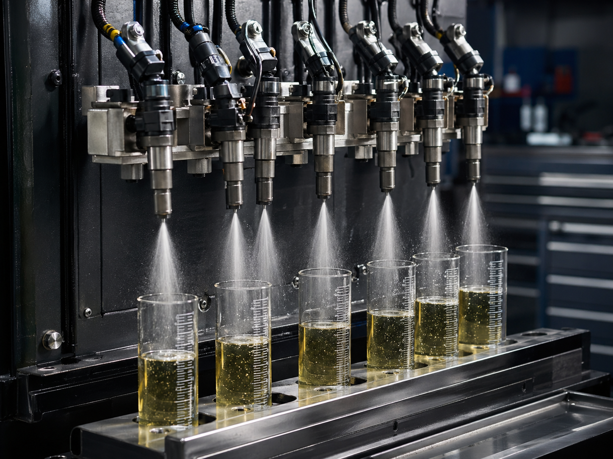
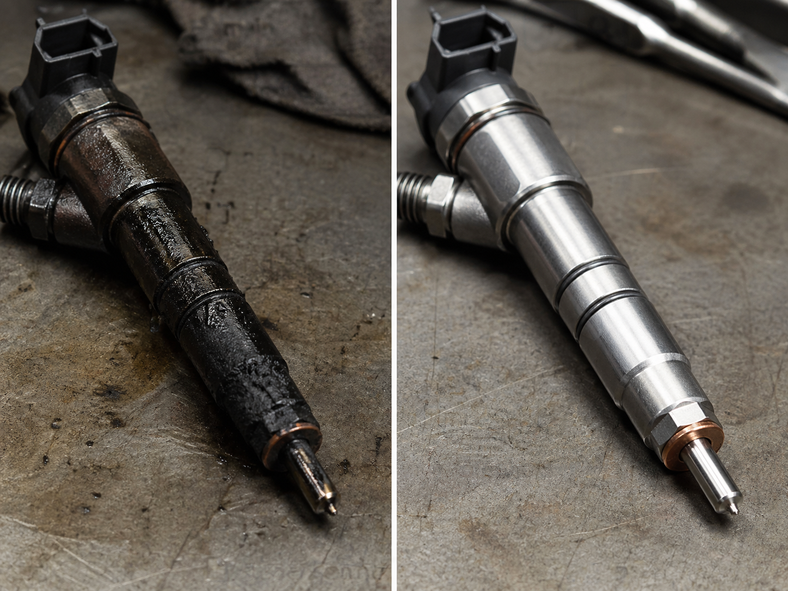

El sistema de inyección diésel moderno constituye uno de los subconjuntos más exigentes del motor de combustión interna. A diferencia de sistemas más rudimentarios, la inyección contemporánea trabaja con tolerancias extremadamente reducidas, presiones elevadas y tiempos de activación medidos en milisegundos. Esto permite una dosificación precisa del combustible, una atomización más fina y una combustión más eficiente. Sin embargo, esa misma precisión vuelve al sistema altamente sensible a la contaminación, a la degradación química del combustible y a la formación progresiva de depósitos internos.

Contenido del artículo
Capítulo 1: ¿Por qué se ensucian los inyectores diésel?
Aunque el sistema cuente con filtración, el combustible nunca está completamente libre de impurezas. A lo largo del tiempo, residuos microscópicos, humedad, compuestos pesados y trazas de oxidación pueden atravesar el circuito y depositarse en componentes críticos. El inyector, por su geometría interna y por el reducido diámetro de sus pasos de pulverización, es especialmente vulnerable a este fenómeno.
Depósitos carbonosos, barnices y alteración del patrón de rociado
Cuando el motor se apaga, el calor residual permanece activo en la culata, en la zona de la tobera y en los conductos cercanos. Parte del combustible remanente sufre evaporación parcial y deja residuos conocidos como barnices y gomas. Estos compuestos se adhieren a superficies metálicas internas y modifican el flujo de combustible. Conforme aumenta la acumulación, la pulverización pierde simetría, el abanico deja de ser homogéneo y la mezcla aire-combustible se vuelve menos eficiente.
En el entorno de la punta del inyector también pueden formarse depósitos carbonosos derivados de combustión incompleta. Si el combustible no se atomiza con precisión o si existe goteo residual, parte del diésel no quema correctamente y deja residuos adheridos. El resultado es una desviación progresiva del patrón de inyección, aumento de humo, ralentí inestable y, en muchos casos, pérdida de respuesta bajo carga.

Capítulo 2: Limpieza profesional por ultrasonido
La limpieza por ultrasonido es uno de los procedimientos más eficaces para recuperar la funcionalidad del inyector cuando existe contaminación interna o externa. A diferencia de aditivos de tanque, esta técnica interviene directamente sobre el componente desmontado, permitiendo atacar residuos persistentes en filtros, conductos y zonas de difícil acceso.
Principio de cavitación y remoción microscópica de residuos
Dentro de una tina ultrasónica, las ondas de alta frecuencia generan millones de microburbujas en el líquido de limpieza. Estas burbujas colapsan violentamente y liberan energía localizada a escala microscópica. Este fenómeno, conocido como cavitación, ayuda a desprender barnices, residuos endurecidos, partículas finas y suciedad adherida en zonas donde el cepillado o la limpieza superficial serían insuficientes.
La eficacia del proceso depende de varios factores: química del detergente, temperatura del baño, tiempo de exposición y condición interna del inyector. Un procedimiento serio no consiste solamente en “lavar” la pieza, sino en aplicar una limpieza controlada que reduzca carga contaminante sin comprometer sellos, geometrías o tolerancias internas.

Después de la limpieza, es indispensable verificar el comportamiento funcional del inyector. Un inyector visualmente limpio no necesariamente está listo para ser reinstalado. Debe comprobarse estanqueidad, caudal y calidad de atomización, ya que el objetivo del mantenimiento no es mejorar la apariencia, sino restituir precisión operativa.
Capítulo 3: Diagnóstico previo con escáner y análisis funcional
Antes de desmontar el sistema, el análisis electrónico ofrece información valiosa. En motores modernos, la unidad de control puede revelar indicios de desequilibrio de mezcla, correcciones anómalas de combustible o eventos de combustión irregulares. El uso de escáner no reemplaza la inspección física, pero sí ayuda a orientar el diagnóstico con mayor criterio.
Interpretación de datos OBD2 y síntomas operativos
En un proceso de diagnóstico serio conviene revisar comportamiento de ralentí, correcciones de combustible, fallos de encendido, presión de riel y respuesta del motor bajo aceleración. Si la ECU compensa de forma persistente, puede existir una alteración en la cantidad efectiva de combustible inyectado. Esto no siempre implica una falla eléctrica del inyector; muchas veces refleja suciedad, patrón de rociado deficiente o diferencias de caudal entre cilindros.
En la práctica, el técnico debe correlacionar la información del escáner con los síntomas percibidos: humo excesivo, pérdida de potencia, vibración, arranque difícil o consumo elevado. Solo cuando el diagnóstico se integra con pruebas reales se puede decidir si corresponde desmontar, limpiar o profundizar en otras áreas del sistema de combustible.

Capítulo 4: Validación en banco de pruebas
Una vez limpia la pieza, el banco de pruebas se convierte en la etapa crítica de validación. Aquí se comprueba si el inyector mantiene estanqueidad, si el patrón de aspersión es uniforme y si el caudal entregado se encuentra dentro de un rango funcional aceptable. Este paso separa una limpieza superficial de un mantenimiento técnicamente confiable.
Prueba de abanico, caudal y equilibrio entre inyectores
En el banco, varios inyectores pueden compararse simultáneamente bajo condiciones controladas. El observador debe verificar si las pulverizaciones presentan forma similar, si no existe goteo anómalo y si el volumen descargado en cada probeta mantiene consistencia. Diferencias apreciables entre cilindros indican desequilibrio, lo cual puede traducirse en funcionamiento irregular del motor.
También se evalúa la capacidad del inyector para cerrar correctamente. Un inyector que no sella bien puede gotear, enriquecer localmente la combustión y favorecer formación de carbonilla. Por eso, la prueba de banco no es un accesorio del proceso: es la confirmación objetiva de que la intervención realmente recuperó la funcionalidad del componente.

- Prueba de estanqueidad: confirma que el inyector no gotea cuando debería permanecer cerrado.
- Prueba de abanico: verifica uniformidad de atomización y calidad del patrón de pulverización.
- Prueba de caudal: compara el volumen descargado por cada inyector bajo un mismo tiempo y condición.
- Prueba comparativa: permite evaluar si existe desequilibrio entre cilindros antes de reinstalar el conjunto.
Capítulo 5: Resultados, prevención y conclusión técnica
Un mantenimiento bien ejecutado produce mejoras visibles en el comportamiento del motor: ralentí más estable, mejor respuesta al acelerador, menor tendencia al humo, reducción de vibraciones y recuperación de eficiencia. Sin embargo, el resultado más importante no es visual ni subjetivo, sino funcional: una dosificación más precisa del combustible y una combustión más uniforme.
Antes y después de una intervención técnica adecuada
La comparación entre una pieza contaminada y una correctamente restaurada muestra con claridad el impacto del proceso. La eliminación de depósitos, la recuperación de superficies y la validación posterior permiten devolver al inyector una condición operativa mucho más cercana a su comportamiento esperado. Esto incrementa la confiabilidad general del sistema de combustible y reduce la probabilidad de desequilibrios entre cilindros.
Para prolongar los resultados, conviene mantener una rutina preventiva: combustible de buena calidad, filtros en intervalos adecuados, revisión periódica ante síntomas tempranos y atención al comportamiento de arranque, humo o consumo. En ingeniería de mantenimiento, intervenir antes de la falla severa casi siempre reduce costo, riesgo y degradación secundaria.
